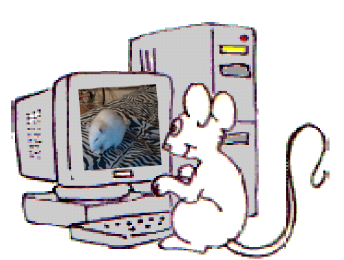

a professor and a post-doc wanted to find out which neurons fire upons expectations. They measured the electrical pulses in the brains of rats.
Thristy rats are trained to press a lever when they hear a tone.
The code kept changing as experiment designs changed
Since the commands controlling the hardware was hard coded. Every time they wanted to change the order of events fired. We had to change the code.
It was not sustainable!
How about we make an experiment creator?
Scientist should be able to run their experiments anytime without needing to edit code.
Experiments they designed are saved in files, that they can load into the execution program.

and three weeks later...
Experiment Editor
The editor will allow scientist to define experiments by:
When to play tone (and its frequency)
When to make the rat wait
When to deliver reward
Save experiment logic and run trials any time
and they can do all this with anyone editing any code.
Wait?! What about conditions?
After running many trials of a few experiments she made, she thought of a experiment flow she's never tried before. What if I gave the rats different types of water depending on how soon they press the lever?
Our linear experiment editor doesn't support that (T.T)
Enter the graph editor
On to greater evils...
Afterwards the stipend of the position ended, they were able to save money for their project, by not needing to hire another programmer.